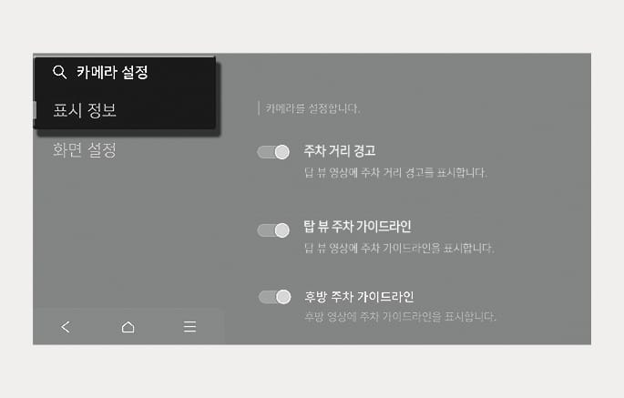

서라운드 뷰 모니터 설정

2C_SVMCameraSettings
서라운드 뷰 모니터 작동 중에 화면의 설정 (
표시 정보
-
주차 거리 경고가 선택되어 있는 경우, 주차 거리 경고 작동 시 서라운드 뷰 모니터 화면 우측의 탑 뷰에 주차 거리 경고 이미지가 표시됩니다.
-
탑 뷰 주차 가이드라인이 선택되어 있는 경우, 전방 탑 뷰 또는 후방 탑 뷰 작동 시 서라운드 뷰 모니터 화면 우측 탑 뷰에 탑 뷰 주차 가이드라인이 표시됩니다.
-
후방 주차 가이드라인이 선택되어 있는 경우, 좌측 영상에 후방 주차 가이드라인이 표시됩니다.
-
차량 사양에 따라 화면 설정 메뉴가 없을 수도 있습니다.
-
후방 탑 뷰 주차 가이드라인의 가로 눈금은 화물 미적재 상태를 기준으로 테일게이트 열림 거리, 차량으로부터 1.5 m 거리를 나타냅니다.
-
후방 주차 가이드라인의 가로 가이드라인은 화물 미적재 상태를 기준으로 차량으로부터 약 0.5 m, 1 m, 2.3 m 거리를 나타냅니다.
서라운드 뷰 모니터의 자동 켜짐 기능을 설정하려면 시동 'ON' 상태에서 인포테인먼트 시스템의 설정 > 차량 > 운전자 보조 > 주차 안전 > 서라운드 뷰 모니터 자동 켜짐을 차례로 선택하십시오.
전방 또는 측방 주차 거리 경고가 발생하면 서라운드 뷰 모니터가 자동으로 켜집니다. 단, 주차/뷰 버튼을 누르거나 인포테인먼트 시스템 작동 버튼을 눌러 서라운드 뷰 모니터를 끈 경우에는 기능이 활성화되지 않습니다.